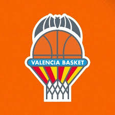

Tarjetas
Noticias Deportivas

Valencia baja a segunda
El Valencia tras perder todos los partidos por paliza se van para segunda
Más noticias

La Euroliga estudia ampliar a 20 equipos
La Euroliga podría ampliar la competición para la temporada 2025-26
Noticia
La NBA quiere al Valencia Basket
La NBA analiza a clubes europeos sin ataduras con Euroliga.
Noticia
Valencia Basket visita la siempre complicada pista del MoraBanc Andorra
El primer equipo masculino de Valencia Basket visita la pista del MoraBanc Andorra
Noticia